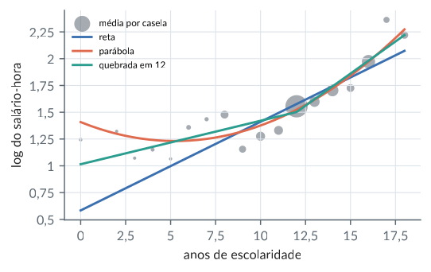
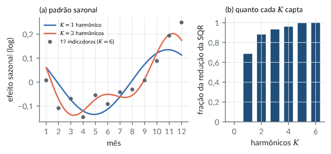
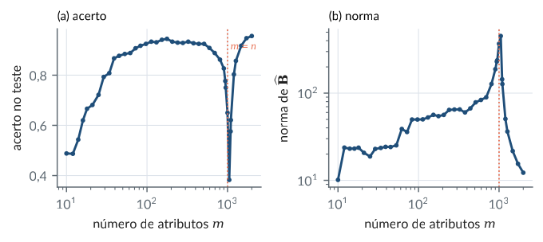
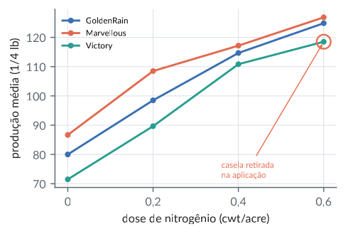

11. Formulações do modelo linear
Material reprodutível do Capítulo 11 do livro.
Exemplos
Codificações de um fator: o que cada coeficiente mede
R/cap11/01_codificacoes.R
# Cap. 11: Codificações de um fator: o que cada coeficiente mede
a <- read.csv(file.path("dados", "yates_oats.csv"))
dose <- factor(a$nitro) # 4 níveis: 0 a 0,6
mu <- tapply(a$yield, dose, mean) # médias das caselas
cods <- list(tratamento = contr.treatment(4), soma = contr.sum(4),
helmert = contr.helmert(4), polinomial = contr.poly(4))
for (nome in names(cods)) {
C <- cods[[nome]]
M <- solve(cbind(1, C)) # coeficientes = M mu
dimnames(M) <- list(paste0("b", 0:3), paste0("mu", 1:4))
X <- cbind(1, C[as.integer(dose), ]) # matriz do modelo
b <- qr.solve(X, a$yield)
cat(nome, ": max |b - M mu| =",
signif(max(abs(b - M %*% mu)), 2), "\n")
print(round(M, 3))
}
round(mu, 2)Saída
tratamento : max |b - M mu| = 4.3e-14
mu1 mu2 mu3 mu4
b0 1 0 0 0
b1 -1 1 0 0
b2 -1 0 1 0
b3 -1 0 0 1
soma : max |b - M mu| = 2.8e-14
mu1 mu2 mu3 mu4
b0 0.25 0.25 0.25 0.25
b1 0.75 -0.25 -0.25 -0.25
b2 -0.25 0.75 -0.25 -0.25
b3 -0.25 -0.25 0.75 -0.25
helmert : max |b - M mu| = 2.8e-14
mu1 mu2 mu3 mu4
b0 0.250 0.250 0.250 0.25
b1 -0.500 0.500 0.000 0.00
b2 -0.167 -0.167 0.333 0.00
b3 -0.083 -0.083 -0.083 0.25
polinomial : max |b - M mu| = 2.8e-14
mu1 mu2 mu3 mu4
b0 0.250 0.250 0.250 0.250
b1 -0.671 -0.224 0.224 0.671
b2 0.500 -0.500 -0.500 0.500
b3 -0.224 0.671 -0.671 0.224
0 0.2 0.4 0.6
79.39 98.89 114.22 123.39python/cap11/01_codificacoes.py
"""Cap. 11: Codificações de um fator: o que cada coeficiente mede"""
from pathlib import Path
import numpy as np
import pandas as pd
raiz = Path(__file__).resolve().parents[2]
a = pd.read_csv(raiz / "dados" / "yates_oats.csv")
niv = np.sort(a["nitro"].unique())
j = np.searchsorted(niv, a["nitro"]) # nível de cada parcela
y = a["yield"].to_numpy(float)
mu = np.array([y[j == k].mean() for k in range(4)])
def poli(k): # como contr.poly do R
V = np.vander(np.arange(1, k + 1), k, increasing=True)
Q = np.linalg.qr(V)[0][:, 1:]
return Q * np.sign(Q[-1]) # último elemento > 0
helm = np.array([[-1, -1, -1], [1, -1, -1], [0, 2, -1], [0, 0, 3]])
cods = {"tratamento": np.eye(4)[:, 1:],
"soma": np.vstack([np.eye(3), -np.ones(3)]),
"helmert": helm, "polinomial": poli(4)}
for nome, C in cods.items():
M = np.linalg.inv(np.column_stack([np.ones(4), C]))
X = np.column_stack([np.ones(len(y)), C[j]])
b = np.linalg.lstsq(X, y, rcond=None)[0]
print(f"{nome}: max |b - M mu| = "
f"{np.max(np.abs(b - M @ mu)):.1e}")
print(pd.DataFrame(M.round(3) + 0.0, index=[f"b{i}" for i in
range(4)], columns=[f"mu{i}" for i in range(1, 5)]))
print("médias:", mu.round(2))Saída
tratamento: max |b - M mu| = 1.4e-14
mu1 mu2 mu3 mu4
b0 1.0 0.0 0.0 0.0
b1 -1.0 1.0 0.0 0.0
b2 -1.0 0.0 1.0 0.0
b3 -1.0 0.0 0.0 1.0
soma: max |b - M mu| = 1.4e-14
mu1 mu2 mu3 mu4
b0 0.25 0.25 0.25 0.25
b1 0.75 -0.25 -0.25 -0.25
b2 -0.25 0.75 -0.25 -0.25
b3 -0.25 -0.25 0.75 -0.25
helmert: max |b - M mu| = 2.8e-14
mu1 mu2 mu3 mu4
b0 0.250 0.250 0.250 0.25
b1 -0.500 0.500 0.000 0.00
b2 -0.167 -0.167 0.333 0.00
b3 -0.083 -0.083 -0.083 0.25
polinomial: max |b - M mu| = 2.8e-14
mu1 mu2 mu3 mu4
b0 0.250 0.250 0.250 0.250
b1 -0.671 -0.224 0.224 0.671
b2 0.500 -0.500 -0.500 0.500
b3 -0.224 0.671 -0.671 0.224
médias: [ 79.39 98.89 114.22 123.39]Interações como produtos de Kronecker linha a linha
R/cap11/02_interacao_kronecker.R
# Cap. 11: Interações como produtos de Kronecker linha a linha
a <- read.csv(file.path("dados", "yates_oats.csv"))
ga <- as.integer(factor(a$gen)); nb <- as.integer(factor(a$nitro))
ind <- function(f, k) outer(f, 1:k, "==") * 1 # indicadoras
DA <- ind(ga, 3); DB <- ind(nb, 4)
DAB <- ind((ga - 1) * 4 + nb, 12) # caselas, e_a (x) e_b
TA <- cbind(1, contr.treatment(3)); TB <- cbind(1, contr.treatment(4))
FA <- DA %*% TA; FB <- DB %*% TB # [1 C] por observação
X <- matrix(0, nrow(a), 12) # produtos linha a linha
for (i in 1:3) for (j in 1:4)
X[, (i - 1) * 4 + j] <- FA[, i] * FB[, j]
c(dif_kronecker = max(abs(X - DAB %*% kronecker(TA, TB))),
posto = qr(X)$rank)
P <- function(Z) Z %*% MASS::ginv(Z) # projeção sobre C(Z)
max(abs(P(X) - P(DAB))) # mesmo espaço coluna
# Perder uma casela inteira (Victory, dose 0,6): 6 parcelas
fora <- a$gen == "Victory" & a$nitro == 0.6
c(colunas = ncol(X), posto = qr(X[!fora, ])$rank,
caselas_cheias = sum(colSums(DAB[!fora, ]) > 0))Saída
dif_kronecker posto
0 12
[1] 8.049117e-16
colunas posto caselas_cheias
12 11 11python/cap11/02_interacao_kronecker.py
"""Cap. 11: Interações como produtos de Kronecker linha a linha"""
from pathlib import Path
import numpy as np
import pandas as pd
raiz = Path(__file__).resolve().parents[2]
a = pd.read_csv(raiz / "dados" / "yates_oats.csv")
ga = pd.factorize(a["gen"], sort=True)[0]
nb = pd.factorize(a["nitro"], sort=True)[0]
DA, DB = np.eye(3)[ga], np.eye(4)[nb] # indicadoras
DAB = np.eye(12)[ga * 4 + nb] # caselas, e_a (x) e_b
TA = np.column_stack([np.ones(3), np.eye(3)[:, 1:]])
TB = np.column_stack([np.ones(4), np.eye(4)[:, 1:]])
FA, FB = DA @ TA, DB @ TB # [1 C] por observação
X = (FA[:, :, None] * FB[:, None, :]).reshape(len(a), 12)
dif = np.max(np.abs(X - DAB @ np.kron(TA, TB)))
print(f"dif. Kronecker {dif:.1e}, posto {np.linalg.matrix_rank(X)}")
def P(Z): # projeção sobre C(Z)
return Z @ np.linalg.pinv(Z)
print(f"max |P(X) - P(DAB)| = {np.max(np.abs(P(X) - P(DAB))):.1e}")
# Perder uma casela inteira (Victory, dose 0,6): 6 parcelas
fora = ((a["gen"] == "Victory") & (a["nitro"] == 0.6)).to_numpy()
print(f"colunas 12, posto {np.linalg.matrix_rank(X[~fora])},"
f" caselas cheias {np.sum(DAB[~fora].sum(0) > 0)}")Saída
dif. Kronecker 0.0e+00, posto 12
max |P(X) - P(DAB)| = 5.3e-16
colunas 12, posto 11, caselas cheias 11Modelo multivariado: a forma vetorizada com Kronecker
R/cap11/03_multivariado.R
# Cap. 11: Modelo multivariado: a forma vetorizada com Kronecker
source(file.path("R", "comum", "gerador.R")) # sorteios do Python
g <- gerador(11); n <- 50
X <- cbind(1, matriz_normal(g, n, 2)) # n x 3
B <- matrix(c(1, 2, -1, 0, 0.5, 3), 3, 2) # duas respostas
L <- t(chol(matrix(c(1, 0.8, 0.8, 1), 2))) # Sigma = L L'
E <- matriz_normal(g, n, 2) %*% t(L) # linhas ~ N(0, Sigma)
Y <- X %*% B + E
B_mq <- solve(crossprod(X), crossprod(X, Y)) # coluna a coluna
Xv <- kronecker(diag(2), X) # vec Y = (I(x)X) vec B
S <- crossprod(E) / n # qualquer Sigma > 0
W <- kronecker(solve(S), diag(n)) # Cov(vec E)^{-1}
b_g <- solve(t(Xv) %*% W %*% Xv, t(Xv) %*% W %*% c(Y))
c(dif_mqg_mq = max(abs(b_g - c(B_mq))))
round(B_mq, 3)Saída
dif_mqg_mq
3.108624e-15
[,1] [,2]
[1,] 1.182 0.058
[2,] 2.015 0.541
[3,] -1.038 2.926python/cap11/03_multivariado.py
"""Cap. 11: Modelo multivariado: a forma vetorizada com Kronecker"""
import sys
from pathlib import Path
import numpy as np
sys.path.insert(0, str(Path(__file__).resolve().parents[1]))
from comum.gerador import Gerador # noqa: E402
g = Gerador(11); n = 50
X = np.column_stack([np.ones(n), g.matriz_normal(n, 2)])
B = np.array([[1, 0], [2, 0.5], [-1, 3.0]]) # duas respostas
L = np.linalg.cholesky(np.array([[1, 0.8], [0.8, 1]]))
E = g.matriz_normal(n, 2) @ L.T # linhas ~ N(0, Sigma)
Y = X @ B + E
B_mq = np.linalg.solve(X.T @ X, X.T @ Y) # coluna a coluna
Xv = np.kron(np.eye(2), X) # vec Y = (I(x)X) vec B
S = E.T @ E / n # qualquer Sigma > 0
W = np.kron(np.linalg.inv(S), np.eye(n)) # Cov(vec E)^{-1}
yv = Y.T.reshape(-1) # vec empilha colunas
b_g = np.linalg.solve(Xv.T @ W @ Xv, Xv.T @ W @ yv)
dif = np.max(np.abs(b_g - B_mq.T.reshape(-1)))
print(f"dif. MQG - MQ: {dif:.1e}")
print(B_mq.round(3))Saída
dif. MQG - MQ: 1.3e-15
[[ 1.182 0.058]
[ 2.015 0.541]
[-1.038 2.926]]Aveia: parametrizações do modelo com interação
R/cap11/04_aveia_parametrizacoes.R
# Cap. 11: Aveia: parametrizações do modelo com interação
a <- read.csv(file.path("dados", "yates_oats.csv"))
a$gen <- factor(a$gen); a$dose <- factor(a$nitro)
mc <- lm(yield ~ 0 + gen:dose, data = a) # médias das caselas
mt <- lm(yield ~ gen * dose, data = a) # tratamento (padrão)
ms <- lm(yield ~ gen * dose, data = a, # soma zero
contrasts = list(gen = "contr.sum", dose = "contr.sum"))
mp <- lm(yield ~ gen * dose, data = a, # Helmert e polinomial
contrasts = list(gen = "contr.helmert", dose = "contr.poly"))
f <- sapply(list(mc, mt, ms, mp), fitted)
c(max_dif_ajustados = max(abs(f - f[, 1])))
mu <- matrix(coef(mc), 3, 4,
dimnames = list(levels(a$gen), levels(a$dose)))
round(mu, 2)
# O "efeito de Marvellous" em duas parametrizações
round(c(tratamento = coef(mt)[["genMarvellous"]],
dif_dose0 = mu["Marvellous", "0"] - mu["GoldenRain", "0"],
soma = coef(ms)[["gen2"]],
dif_media = mean(mu["Marvellous", ]) - mean(mu)), 3)
# Uma casela inteira perdida: Victory na dose 0,6
b <- a[!(a$gen == "Victory" & a$nitro == 0.6), ]
cel <- interaction(b$gen, b$dose, drop = TRUE)
mc2 <- lm(b$yield ~ 0 + cel) # 11 médias
mt2 <- lm(yield ~ gen * dose, data = b)
c(medias = length(coef(mc2)), colunas_efeitos = length(coef(mt2)),
posto = mt2$rank, na = sum(is.na(coef(mt2))))
# Victory - GoldenRain nas doses 0, 0,2 e 0,4: estimável
m2 <- coef(mc2)
v <- function(g, d) m2[[paste0("cel", g, ".", d)]]
round(mean(sapply(c("0", "0.2", "0.4"), function(d)
v("Victory", d) - v("GoldenRain", d))), 3)Saída
max_dif_ajustados
4.831691e-13
0 0.2 0.4 0.6
GoldenRain 80.00 98.50 114.67 124.83
Marvellous 86.67 108.50 117.17 126.83
Victory 71.50 89.67 110.83 118.50
tratamento dif_dose0 soma dif_media
6.667 6.667 5.819 5.819
medias colunas_efeitos posto na
11 12 11 1
[1] -7.056python/cap11/04_aveia_parametrizacoes.py
"""Cap. 11: Aveia: parametrizações do modelo com interação"""
from pathlib import Path
import numpy as np
import pandas as pd
raiz = Path(__file__).resolve().parents[2]
a = pd.read_csv(raiz / "dados" / "yates_oats.csv")
gv, ga = np.unique(a["gen"], return_inverse=True)
dv, nb = np.unique(a["nitro"], return_inverse=True)
y = a["yield"].to_numpy(float)
def trat(k): return np.eye(k)[:, 1:]
def soma(k): return np.vstack([np.eye(k - 1), -np.ones(k - 1)])
def helm(k):
C = [[-1] * (j + 1) + [j + 1] + [0] * (k - 2 - j)
for j in range(k - 1)]
return np.array(C, float).T
def poli(k):
Q = np.linalg.qr(np.vander(np.arange(1, k + 1), k, True))[0]
return Q[:, 1:] * np.sign(Q[-1, 1:])
def matriz(CA, CB, g=ga, d=nb): # [1, A, B, A:B]
FA = np.column_stack([np.ones(3), CA])[g]
FB = np.column_stack([np.ones(4), CB])[d]
X = FA[:, :, None] * FB[:, None, :] # ordem de Kronecker
return X.reshape(len(g), -1)
def ajuste(X, v=y): return np.linalg.lstsq(X, v, rcond=None)[0]
cel = ga * 4 + nb
Xc = np.eye(12)[cel] # médias das caselas
mods = [Xc, matriz(trat(3), trat(4)), matriz(soma(3), soma(4)),
matriz(helm(3), poli(4))]
f = np.column_stack([X @ ajuste(X) for X in mods])
print(f"max dif. ajustados: {np.max(np.abs(f - f[:, [0]])):.1e}")
mu = ajuste(Xc).reshape(3, 4)
print(pd.DataFrame(mu.round(2), index=gv, columns=dv))
bt = ajuste(mods[1]); bs = ajuste(mods[2]) # Marvellous: 4 e 8
print(f"tratamento {bt[4]:.3f}, dif. na dose 0"
f" {mu[1, 0] - mu[0, 0]:.3f}")
print(f"soma {bs[8]:.3f}, dif. de médias"
f" {mu[1].mean() - mu.mean():.3f}")
# Uma casela inteira perdida: Victory na dose 0,6
ok = ~((a["gen"] == "Victory") & (a["nitro"] == 0.6)).to_numpy()
cheias = np.unique(cel[ok])
Xt2 = matriz(trat(3), trat(4))[ok]
print(f"médias {len(cheias)}, colunas efeitos {Xt2.shape[1]},"
f" posto {np.linalg.matrix_rank(Xt2)}")
m2 = dict(zip(cheias, ajuste(np.eye(12)[cel[ok]][:, cheias], y[ok])))
dif = [m2[2 * 4 + d] - m2[0 * 4 + d] for d in range(3)]
print(f"Victory - GoldenRain nas doses 0 a 0,4: {np.mean(dif):.3f}")Saída
max dif. ajustados: 1.7e-13
0.0 0.2 0.4 0.6
GoldenRain 80.00 98.50 114.67 124.83
Marvellous 86.67 108.50 117.17 126.83
Victory 71.50 89.67 110.83 118.50
tratamento 6.667, dif. na dose 0 6.667
soma 5.819, dif. de médias 5.819
médias 11, colunas efeitos 12, posto 11
Victory - GoldenRain nas doses 0 a 0,4: -7.056Salários: regressão e média condicional
R/cap11/05_salarios_cef.R
# Cap. 11: Salários: regressão e média condicional
w <- read.csv(file.path("dados", "wage1.csv"))
y <- log(w$wage); e <- w$educ; n <- length(y)
nj <- table(e); ej <- as.numeric(names(nj)) # 18 caselas
mj <- tapply(y, e, mean) # média condicional
D <- outer(e, ej, "==") * 1 # modelo saturado
X1 <- cbind(1, e) # reta
X2 <- cbind(X1, e^2) # parábola
X3 <- cbind(X1, pmax(e - 12, 0)) # reta quebrada em 12
P <- function(Z, v = y) Z %*% qr.solve(Z, v)
# MQ com os indivíduos = MQ ponderado nas médias das caselas
b_ind <- qr.solve(X1, y)
b_cel <- lm(mj ~ ej, weights = as.numeric(nj))$coef
c(dif = max(abs(b_ind - b_cel)), b0 = b_ind[[1]], b1 = b_ind[[2]])
# Que fração da variação entre caselas cada forma capta?
entre <- sum((P(D) - mean(y))^2)
capta <- function(Z) sum((P(Z) - mean(y))^2) / entre
round(c(reta = capta(X1), parabola = capta(X2),
quebrada = capta(X3)), 3)
b3 <- qr.solve(X3, y)
round(c(incl_ate_12 = b3[[2]], incl_depois = b3[[2]] + b3[[3]]), 4)
b2 <- qr.solve(X2, y)
round(b2[2] + 2 * b2[3] * c(8, 12, 16), 4) # retornos marginaisSaída
dif b0 b1
1.254552e-14 5.837727e-01 8.274437e-02
reta parabola quebrada
0.773 0.897 0.871
incl_ate_12 incl_depois
0.0406 0.1197
[1] 0.0353 0.0865 0.1378python/cap11/05_salarios_cef.py
"""Cap. 11: Salários: regressão e média condicional"""
from pathlib import Path
import numpy as np
import pandas as pd
raiz = Path(__file__).resolve().parents[2]
w = pd.read_csv(raiz / "dados" / "wage1.csv")
y = np.log(w["wage"].to_numpy()); e = w["educ"].to_numpy(float)
ej, j, nj = np.unique(e, return_inverse=True, return_counts=True)
mj = np.bincount(j, y) / nj # média condicional
D = np.eye(len(ej))[j] # modelo saturado
um = np.ones(len(y))
X1 = np.column_stack([um, e]) # reta
X2 = np.column_stack([X1, e**2]) # parábola
X3 = np.column_stack([X1, np.maximum(e - 12, 0)]) # quebra em 12
def coef(Z, v=y): return np.linalg.lstsq(Z, v, rcond=None)[0]
def P(Z, v=y): return Z @ coef(Z, v)
# MQ com os indivíduos = MQ ponderado nas médias das caselas
b_ind = coef(X1)
r = np.sqrt(nj) # pesos n_j
b_cel = coef(np.column_stack([r, r * ej]), r * mj)
dif = np.max(np.abs(b_ind - b_cel))
print(f"dif {dif:.1e}, b = {b_ind.round(5)}")
# Que fração da variação entre caselas cada forma capta?
entre = np.sum((P(D) - y.mean())**2)
capta = [np.sum((P(Z) - y.mean())**2) / entre for Z in (X1, X2, X3)]
print("reta, parábola, quebrada:", np.round(capta, 3))
b3 = coef(X3)
print(f"inclinações: até 12 {b3[1]:.4f}, depois {b3[1] + b3[2]:.4f}")
b2 = coef(X2)
print("retornos marginais em 8, 12, 16:",
np.round(b2[1] + 2 * b2[2] * np.array([8, 12, 16]), 4))Saída
dif 1.9e-15, b = [0.58377 0.08274]
reta, parábola, quebrada: [0.773 0.897 0.871]
inclinações: até 12 0.0406, depois 0.1197
retornos marginais em 8, 12, 16: [0.0353 0.0865 0.1378]Figura: salarios cef
python/cap11/fig_cap11.py
def fig_salarios():
w = pd.read_csv(DADOS / "wage1.csv")
y = np.log(w["wage"].to_numpy()); e = w["educ"].to_numpy(float)
ej, j, nj = np.unique(e, return_inverse=True, return_counts=True)
mj = np.bincount(j, y) / nj
um = np.ones(len(y)); g = np.linspace(0, 18, 200)
formas = {"reta": (np.column_stack([um, e]), lambda x: np.column_stack([np.ones_like(x), x])),
"parábola": (np.column_stack([um, e, e**2]), lambda x: np.column_stack([np.ones_like(x), x, x**2])),
"quebrada em 12": (np.column_stack([um, e, np.maximum(e - 12, 0)]),
lambda x: np.column_stack([np.ones_like(x), x, np.maximum(x - 12, 0)]))}
fig, ax = plt.subplots(figsize=(0.8 * LARG, 2.7))
ax.scatter(ej, mj, s=4 + 1.2 * nj, color=COR["cinza"], alpha=0.55, lw=0, label="média por casela")
for k, (nome, (X, f)) in enumerate(formas.items()):
ax.plot(g, f(g) @ coef(X, y), color=CATEG[k], label=nome)
ax.set_xlabel("anos de escolaridade"); ax.set_ylabel("log do salário-hora")
ax.legend(fontsize=6.5, loc="upper left"); virgula(ax)
fig.tight_layout(); salvar(fig, CAP, "salarios_cef")Trecho de python/cap11/fig_cap11.py, que traz também as importações e o estilo.

Sazonalidade: indicadoras de mês ou harmônicos de Fourier
R/cap11/06_sazonalidade_fourier.R
# Cap. 11: Sazonalidade: indicadoras de mês ou harmônicos de Fourier
s <- read.csv(file.path("dados", "seatbelts.csv"))
y <- log(s$motoristas); n <- length(y); t <- 1:n
D <- outer(s$mes, 1:12, "==") * 1 # 12 indicadoras
fourier <- function(K) { # K harmônicos (K <= 6)
F <- NULL
for (k in seq_len(K)) {
F <- cbind(F, cos(2 * pi * k * t / 12))
if (k < 6) F <- cbind(F, sin(2 * pi * k * t / 12))
}
F
}
F6 <- fourier(6) # 11 colunas
G <- crossprod(F6) # F'F diagonal
c(fora_diag = max(abs(G - diag(diag(G)))), diag_min = min(diag(G)),
diag_max = max(diag(G)))
Xd <- cbind(D, t, s$lei) # indicadoras
Xf <- cbind(1, F6, t, s$lei) # Fourier completo
fit <- function(X) X %*% qr.solve(X, y)
c(dif_ajustados = max(abs(fit(Xd) - fit(Xf))))
sqr <- sapply(0:6, function(K)
sum((y - fit(cbind(1, fourier(K), t, s$lei)))^2))
round(rbind(K = 0:6, colunas = c(0, 2, 4, 6, 8, 10, 11),
SQR = sqr, frac = (sqr[1] - sqr) / (sqr[1] - sqr[7])), 3)
lei <- sapply(c(2, 6), function(K) { # efeito da lei
X <- cbind(1, fourier(K), t, s$lei); qr.solve(X, y)[ncol(X)] })
round(c(K2 = lei[1], K6 = lei[2]), 4)Saída
fora_diag diag_min diag_max
2.976059e-13 9.600000e+01 1.920000e+02
dif_ajustados
2.131628e-14
[,1] [,2] [,3] [,4] [,5] [,6] [,7]
K 0.000 1.000 2.000 3.000 4.000 5.000 6.000
colunas 0.000 2.000 4.000 6.000 8.000 10.000 11.000
SQR 3.928 2.184 1.688 1.558 1.488 1.395 1.386
frac 0.000 0.686 0.881 0.932 0.960 0.996 1.000
K2 K6
-0.1625 -0.1640python/cap11/06_sazonalidade_fourier.py
"""Cap. 11: Sazonalidade: indicadoras ou harmônicos de Fourier"""
from pathlib import Path
import numpy as np
import pandas as pd
raiz = Path(__file__).resolve().parents[2]
s = pd.read_csv(raiz / "dados" / "seatbelts.csv")
y = np.log(s["motoristas"].to_numpy()); n = len(y)
t = np.arange(1, n + 1.0); lei = s["lei"].to_numpy(float)
D = np.eye(12)[s["mes"].to_numpy() - 1] # 12 indicadoras
def fourier(K): # K harmônicos (K <= 6)
F = []
for k in range(1, K + 1):
F.append(np.cos(2 * np.pi * k * t / 12))
if k < 6:
F.append(np.sin(2 * np.pi * k * t / 12))
return np.column_stack(F) if F else np.empty((n, 0))
F6 = fourier(6) # 11 colunas
G = F6.T @ F6 # F'F diagonal
fora = np.max(np.abs(G - np.diag(np.diag(G))))
print(f"fora da diagonal {fora:.1e}, diagonal de"
f" {G.diagonal().min():.0f} a {G.diagonal().max():.0f}")
def coef(X): return np.linalg.lstsq(X, y, rcond=None)[0]
def fit(X): return X @ coef(X)
def modelo(K):
return np.column_stack([np.ones(n), fourier(K), t, lei])
Xd = np.column_stack([D, t, lei]) # indicadoras
dif = np.max(np.abs(fit(Xd) - fit(modelo(6))))
print(f"dif. ajustados {dif:.1e}")
sqr = np.array([np.sum((y - fit(modelo(K)))**2) for K in range(7)])
frac = (sqr[0] - sqr) / (sqr[0] - sqr[6])
col = [0, 2, 4, 6, 8, 10, 11]
print(pd.DataFrame({"K": range(7), "colunas": col,
"SQR": sqr.round(3), "frac": frac.round(3)}))
lei_K = [coef(modelo(K))[-1] for K in (2, 6)]
print("efeito da lei, K = 2 e K = 6:", np.round(lei_K, 4))Saída
fora da diagonal 3.0e-13, diagonal de 96 a 192
dif. ajustados 2.1e-13
K colunas SQR frac
0 0 0 3.928 0.000
1 1 2 2.184 0.686
2 2 4 1.688 0.881
3 3 6 1.558 0.932
4 4 8 1.488 0.960
5 5 10 1.395 0.996
6 6 11 1.386 1.000
efeito da lei, K = 2 e K = 6: [-0.1625 -0.164 ]Figura: sazonalidade fourier
python/cap11/fig_cap11.py
def fig_sazonalidade():
s = pd.read_csv(DADOS / "seatbelts.csv")
y = np.log(s["motoristas"].to_numpy()); n = len(y); t = np.arange(1, n + 1.0)
lei = s["lei"].to_numpy(float)
def fourier(K, tt):
F = [np.ones_like(tt)]
for k in range(1, K + 1):
F.append(np.cos(2 * np.pi * k * tt / 12))
if k < 6:
F.append(np.sin(2 * np.pi * k * tt / 12))
return np.column_stack(F)
meses = np.arange(1, 13.0); fino = np.linspace(1, 12, 200)
fig, (a1, a2) = plt.subplots(1, 2, figsize=(LARG, 2.5), gridspec_kw={"width_ratios": [1.5, 1]})
sqr = []
for K in range(7):
X = np.column_stack([fourier(K, t), t, lei]); b = coef(X, y)
sqr.append(np.sum((y - X @ b) ** 2))
saz = fourier(K, meses) @ b[: X.shape[1] - 2]
if K == 6:
a1.plot(meses, saz - saz.mean(), "o", ms=3.5, color=COR["cinza"], label="12 indicadoras ($K=6$)", zorder=3)
elif K in (1, 2):
sf = fourier(K, fino) @ b[: X.shape[1] - 2]
a1.plot(fino, sf - saz.mean(), color=CATEG[K - 1], label=f"$K={K}$ harmônico" + ("s" if K > 1 else ""))
a1.set_xticks(range(1, 13)); a1.set_xlabel("mês"); a1.set_ylabel("efeito sazonal (log)")
a1.legend(fontsize=6.3, loc="upper left"); a1.set_title("(a) padrão sazonal", fontsize=8.5, loc="left"); virgula(a1)
sqr = np.array(sqr); frac = (sqr[0] - sqr) / (sqr[0] - sqr[6])
a2.bar(range(7), frac, color=COR["primaria"], width=0.65)
a2.set_xlabel("harmônicos $K$"); a2.set_ylabel("fração da redução da SQR"); a2.set_ylim(0, 1.05)
a2.set_title("(b) quanto cada $K$ capta", fontsize=8.5, loc="left"); virgula(a2, "y")
fig.tight_layout(); salvar(fig, CAP, "sazonalidade_fourier")Trecho de python/cap11/fig_cap11.py, que traz também as importações e o estilo.

Atributos aleatórios: uma rede de uma camada congelada
R/cap11/07_atributos_aleatorios.R
# Cap. 11: Atributos aleatórios: uma rede de uma camada congelada
source(file.path("R", "comum", "gerador.R")) # sorteios do Python
d <- read.csv(file.path("dados", "digitos.csv"))
X <- cbind(1, as.matrix(d[, -1]) / 16) # intercepto e pixels
Y <- outer(d$digito, 0:9, "==") * 1 # 10 respostas (one-hot)
tr <- 1:1000; te <- 1001:nrow(d)
g <- gerador(7); M <- 2000
W <- matriz_normal(g, M, 65, sd = 1 / 8) # pesos congelados
Phi <- pmax(X %*% t(W), 0) # ReLU: n x M
acerto <- function(m) { # B = A^+ Y (norma mínima)
A <- Phi[, 1:m, drop = FALSE]; s <- svd(A[tr, ])
r <- sum(s$d > sqrt(.Machine$double.eps) * s$d[1]) # como ginv
B <- s$v[, 1:r] %*% (crossprod(s$u[, 1:r], Y[tr, ]) / s$d[1:r])
prev <- max.col(A[te, ] %*% B, "first") - 1
c(m = m, posto = r, norma = sqrt(sum(B^2)),
acerto = mean(prev == d$digito[te]))
}
ms <- c(10, 50, 100, 300, 600, 900, 1000, 1100, 1500, 2000)
round(t(sapply(ms, acerto)), 3)
# Atributos que nunca se acendem no treino (colunas nulas)
sum(colSums(Phi[tr, ]) == 0)Saída
m posto norma acerto
[1,] 10 10 10.113 0.488
[2,] 50 47 25.003 0.877
[3,] 100 96 48.760 0.930
[4,] 300 292 60.350 0.931
[5,] 600 582 82.804 0.908
[6,] 900 870 188.260 0.827
[7,] 1000 968 368.946 0.650
[8,] 1100 1000 127.070 0.621
[9,] 1500 1000 20.697 0.925
[10,] 2000 1000 12.228 0.956
[1] 68python/cap11/07_atributos_aleatorios.py
"""Cap. 11: Atributos aleatórios: uma rede de uma camada congelada"""
import sys
from pathlib import Path
import numpy as np
import pandas as pd
sys.path.insert(0, str(Path(__file__).resolve().parents[1]))
from comum.gerador import Gerador # noqa: E402
raiz = Path(__file__).resolve().parents[2]
d = pd.read_csv(raiz / "dados" / "digitos.csv")
dig = d["digito"].to_numpy()
X = np.column_stack([np.ones(len(d)), d.iloc[:, 1:] / 16])
Y = np.eye(10)[dig] # 10 respostas (one-hot)
tr, te = slice(0, 1000), slice(1000, None)
g = Gerador(7); M = 2000
W = g.matriz_normal(M, 65, sd=1 / 8) # pesos congelados
Phi = np.maximum(X @ W.T, 0) # ReLU: n x M
def acerto(m): # B = A^+ Y (norma mínima)
A = Phi[:, :m]
U, s, Vt = np.linalg.svd(A[tr], full_matrices=False)
r = np.sum(s > np.sqrt(np.finfo(float).eps) * s[0]) # como ginv
B = Vt[:r].T @ ((U[:, :r].T @ Y[tr]) / s[:r, None])
prev = np.argmax(A[te] @ B, axis=1)
return m, r, np.sqrt(np.sum(B**2)), np.mean(prev == dig[te])
ms = [10, 50, 100, 300, 600, 900, 1000, 1100, 1500, 2000]
res = pd.DataFrame([acerto(m) for m in ms],
columns=["m", "posto", "norma", "acerto"])
print(res.round(3).to_string(index=False))
# Atributos que nunca se acendem no treino (colunas nulas)
print("colunas nulas:", np.sum(Phi[tr].sum(0) == 0))Saída
m posto norma acerto
10 10 10.113 0.488
50 47 25.003 0.877
100 96 48.760 0.930
300 292 60.350 0.931
600 582 82.804 0.908
900 870 188.260 0.827
1000 968 368.946 0.650
1100 1000 127.070 0.621
1500 1000 20.697 0.925
2000 1000 12.228 0.956
colunas nulas: 68Figura: atributos aleatorios
python/cap11/fig_cap11.py
def fig_atributos():
d = pd.read_csv(DADOS / "digitos.csv"); dig = d["digito"].to_numpy()
X = np.column_stack([np.ones(len(d)), d.iloc[:, 1:] / 16]); Y = np.eye(10)[dig]
W = Gerador(7).matriz_normal(2000, 65, sd=1 / 8)
Phi = np.maximum(X @ W.T, 0)
ms = np.unique(np.round(np.geomspace(10, 2000, 36)).astype(int))
ms = np.unique(np.concatenate([ms, [900, 950, 1000, 1050, 1100, 1200]]))
ac, nr = [], []
for m in ms:
A = Phi[:, :m]; U, s, Vt = np.linalg.svd(A[:1000], full_matrices=False)
r = np.sum(s > np.sqrt(np.finfo(float).eps) * s[0])
B = Vt[:r].T @ ((U[:, :r].T @ Y[:1000]) / s[:r, None])
ac.append(np.mean(np.argmax(A[1000:] @ B, 1) == dig[1000:])); nr.append(np.sqrt(np.sum(B ** 2)))
fig, (a1, a2) = plt.subplots(1, 2, figsize=(LARG, 2.4))
for ax, v, rot in ((a1, ac, "acerto no teste"), (a2, nr, "norma de $\\widehat{\\mathbf{B}}$")):
ax.plot(ms, v, "o-", ms=2.2, color=COR["primaria"])
ax.axvline(1000, color=COR["destaque"], ls=":", lw=1)
ax.set_xscale("log"); ax.set_xlabel("número de atributos $m$"); ax.set_ylabel(rot)
a1.set_title("(a) acerto", fontsize=8.5, loc="left"); a2.set_title("(b) norma", fontsize=8.5, loc="left")
a2.set_yscale("log"); virgula(a1, "y")
a1.text(1080, 0.9, "$m=n$", fontsize=6.5, color=COR["destaque"])
fig.tight_layout(); salvar(fig, CAP, "atributos_aleatorios")Trecho de python/cap11/fig_cap11.py, que traz também as importações e o estilo.

Outras figuras
Figura: aveia caselas
python/cap11/fig_cap11.py
def fig_aveia():
a = pd.read_csv(DADOS / "yates_oats.csv")
mu = a.groupby(["gen", "nitro"])["yield"].mean().unstack()
doses = mu.columns.to_numpy()
fig, ax = plt.subplots(figsize=(0.72 * LARG, 2.6))
for k, g in enumerate(mu.index):
ax.plot(doses, mu.loc[g], "o-", ms=3.5, color=CATEG[k], label=g)
ax.plot([0.6], [mu.loc["Victory", 0.6]], "o", ms=11, mfc="none", mec=COR["destaque"], mew=1.3)
ax.annotate("casela retirada\nna aplicação", (0.6, mu.loc["Victory", 0.6]), xytext=(0.36, 72),
fontsize=6.5, color=COR["destaque"], arrowprops=dict(arrowstyle="->", color=COR["destaque"], lw=0.8))
ax.set_xticks(doses); ax.set_xlabel("dose de nitrogênio (cwt/acre)")
ax.set_ylabel("produção média (1/4 lb)"); ax.legend(fontsize=6.5, loc="upper left"); virgula(ax)
fig.tight_layout(); salvar(fig, CAP, "aveia_caselas")Trecho de python/cap11/fig_cap11.py, que traz também as importações e o estilo.
